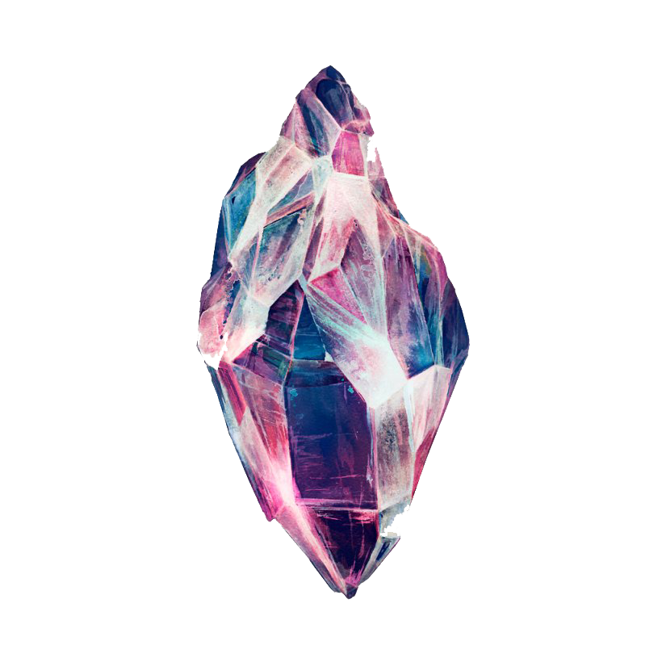

Ig
Tw
Ig
Tw

Кристали
Кристалите и скапоцените камења испуштаат вибрации и фреквенции кои помагаат во заздравување,
одржување рамнотежа, исполнување со енергија и трансформација
на човечкото тело и дух, усогласувајќи ја нашата карма и силите на природата за да формираат
хармонично единство со природата и Земјата на која живееме.
Некои кристали ослободуваат скриена енергија во внатрешноста на клетките на човечкото тело,
додека некои собираат сончева енергија за заздравување на телото.
Постојат и такви кристали кои откриваат избалансирано духовно суштество кое живее во сите нас,
внесувајќи повеќе љубов и успех во нашите животи.
Кристалите, какви и да се, големи и мали, убави или едноставни во форма,
ја содржат оригиналната енергија на универзумот.
Полето на нивната неверојатна моќ е надвор од границите на човечкото разбирање за овој свет, простор и време.
Знаењето за кристалите и скапоцените камења се пренесувало низ вековите и ни останува
наследството што можеме да ги искористиме за да ги подобриме нашите животи и здравје. Иако можеби не го
откривме целосно нивниот ефект, да бидеме задоволни од она што можеме да го кажеме со сигурност
- тие го имаат својот ефект.